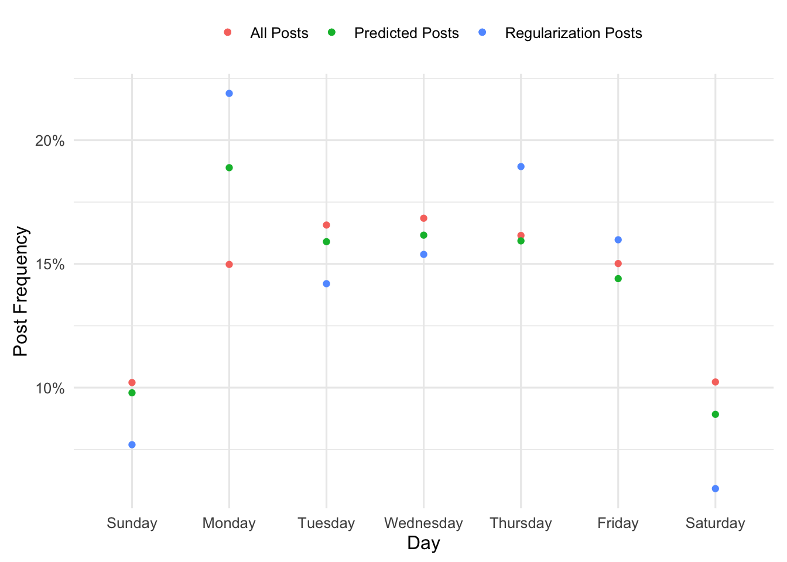

I’m reading Statistical Learning with Sparsity. Its like Elements of Statistical Learning, but just for the LASSO. In chapter 3, there is this interesting example of using the LASSO to estimate rates for noisy multinomial processes. Here is the setup from the book
Suppose we have a sample of \(N\) counts \(\{ y_k \}_{k-=1}^N\) from an \(N\)-cell multinomial distribution, and let \(r_k = y_k / \sum_{\ell=1}^N y_{\ell}\) be the corresponding vector of proportions. For example, in large-scale web applications, these counts might represent the number of people in each country in teh YSA that visited a particular website during a given week. This vector could be sparse depending on the specifics, so there is desire to regularize toward a broader, more stable distribution \(\mathbf{u} = \{ u_k \}_{k=1}^N\) (for example, the same demographic, except measured over years)
In short, you’ve got some vector of probabilities from a multinomial process, \(\mathbf{r}\). These probabilities are noisy, and instead of regularizing them to be uniform, you want to regularize them towards some other, more stable, distribution \(\mathbf{u}\). The result is other distribution, \(\mathbf{q}\), and you constrain yourself so that the max approximation error between \(\mathbf{r}\) and \(\mathbf{q}\) is less than some tolerance, \(\Vert \mathbf{r} - \mathbf{q} \Vert _\infty < \delta\). The authors then go on to show that minimizing the KL-divergence for discrete distributions, subject to this constraint, is equivalent to the LASSO with a poisson likelihood. Only added trick is that you use \(\log(\mathbf{u})\) as an offset in the model call. For more detail, see chapter 3 of the book.
The authors kind of give a half hearted attempt at an application of such a procedure, so I tried to come up with one myself. In a previous blog post, we used looked at what kind of experts exist on statsexchange. We can use the data explorer I used for that post to look at two frequencies:
Frequencies of total posts over a typical week in the year 2022, and
Frequencies of posts tagged “regularization” posts over a typical week in the year 2022.
There are considerably more non-regularization posts than there are regularization posts, so while we should expect the frequencies to be similar there is probably some noise. Let’s use the query (below) to get our data and make a plot of those frequencies.
Click to see SQL Query
select
cast(A.CreationDate as date) as creation_date,
count(distinct A.id) as num_posts,
count(distinct case when lower(TargetTagName) = 'regularization' then A.id end) as reg_posts
from Posts A
left join PostTags as B on A.Id = B.PostId
left join TagSynonyms as C on B.TagId = C.Id
where A.PostTypeId = 1 and A.CreationDate between '2022-01-01' and '2022-12-31'
group by cast(A.CreationDate as date)
order by cast(A.CreationDate as date)
Obviously, the smaller number of posts about regularization leads to larger noise in the multinomial estimates. You can very easily see that in the plot; Monday is not special, its very likely noise.
So here is where we can use LASSO to reign in some of that noise. We just need to specify how discordant we want our predicted frequencies to be from the observed frequencies, and fit a LASSO model with a penalty which achieves this desired tolerance.
So let’s say my predictions from the LASSO are the vector \(\mathbf{p}\) and the observed frequencies for regularization posts are \(\mathbf{r}\). Let’s say I want the largest error between the two to be no larger than 0.05. Shown below is some code for how to do that:
# Set up the regression problemu <- d$num_posts_pr <- d$reg_posts_pX <-model.matrix(~Day-1, data=d)max_error <-0.03# Grid of penalties to search overlambda.grid <-2^seq(-8, 0, 0.005)# Fit the model and compute the difference between the largest error and our tolerancefit_lasso <-function(x){ fit <-glmnet(X, r, family='poisson', offset=log(u), lambda=x) p <-predict(fit, newx=X, newoffset=log(u), type='response')abs(max(r-p) - max_error)}errors<-map_dbl(lambda.grid, fit_lasso)# Select the lambda which produces error closest to 0.03lambda <- lambda.grid[which.min(errors)]# Make predictions under this modelfit <-glmnet(X, r, family='poisson', offset=log(u), lambda=lambda)d$predicted <-predict(fit, newx=X, newoffset=log(u), type='response')[, 's0']new_plot <- d %>%ggplot() +geom_point(aes(oday, num_posts_p, color='All Posts')) +geom_point(aes(oday, reg_posts_p, color='Regularization Posts')) +geom_point(aes(oday, predicted, color='Predicted Posts')) +scale_y_continuous(labels = scales::percent) +labs(x='Day', y='Post Frequency', color='')new_plot

This might be easier to see if we follow Tufte and show small multiples. You can see as the penalty increases, the green dots (predicted) go from the blue dots (observed frequencies of regularization related posts) to the pink dots (the frequencies of all plots).